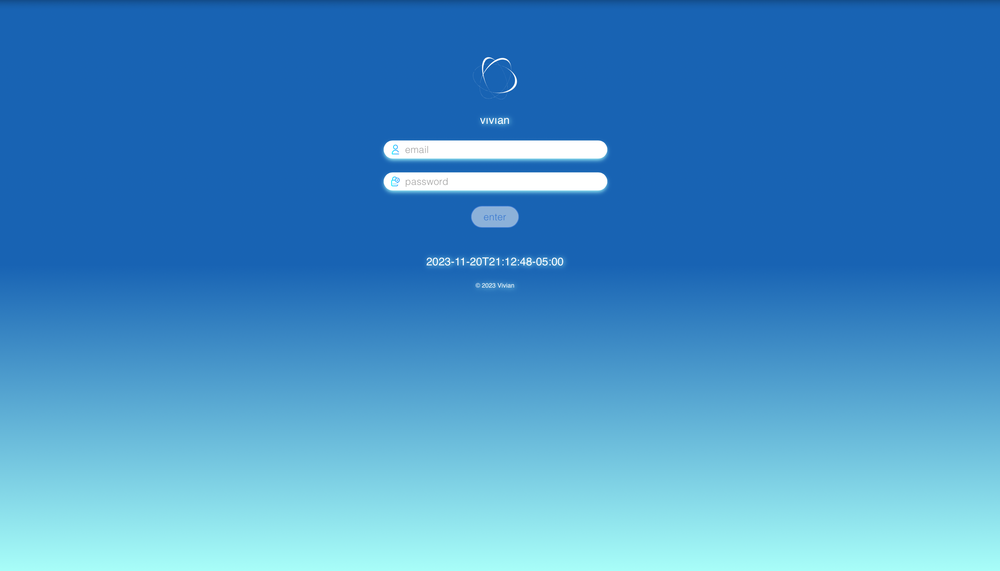
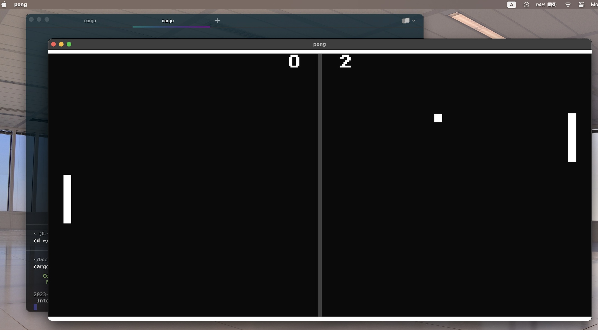
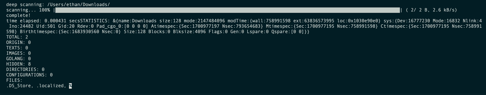

ethan

VIVIAN
•
Go
•
JavaScript
•
HTML/CSS
Cloud-based application aiming to streamline
the analysis of local cloud deployments.
Powered by Kubernetes and Googles ServiceWeaver
web framework. I was inspired to do this after
being unsatisfied with the other tools out there.
(in development)
repository

PONG
•
Rust
Written in Rust, i've classic game of recreated
the classic game of pong. It features two modes:
-Single Player (against AI)
-Two Player
(archived)
repository

ORGANIZE.GO
•
Go
Safely organize and manage files in one click:
it logs past actions, revert changes,
and tests the organization method. The code scans
directories, matches file extensions, and allows
deep scanning for statistics and insights.
(in development)
repository